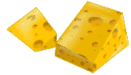
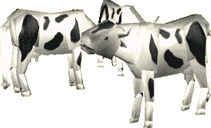

|
A baby cow is called a calf. The calf grows in its mother's womb for 9 months. As soon as the calf is born the cow starts to produce milk to feed it because it can't eat grass like its Mother. The mother cow will produce milk for about 10 months after the calf is born. However, she produces much more milk than her little one really needs. Every day she produces between 20 and 30 litres of milk: that means she could fill 20 to 30 bottles with milk. Did you know that one cow could provide breakfast for around 60 children like you?! 
But don't forget that the cow needs some of her milk to feed her little one, so the farmer cannot take all of her milk!  With cows' milk, you can also make butter, cheese and cream. Mrs Cow really does feed a lot of people! Sheep and goats also produce milk to feed their babies; their milk has a stronger taste and is mostly used to make cheese rather then to drink. |
| You
can check that you've understood this page! Click here to play! |
If
you'd like to find a recipe that uses milk, click here! |